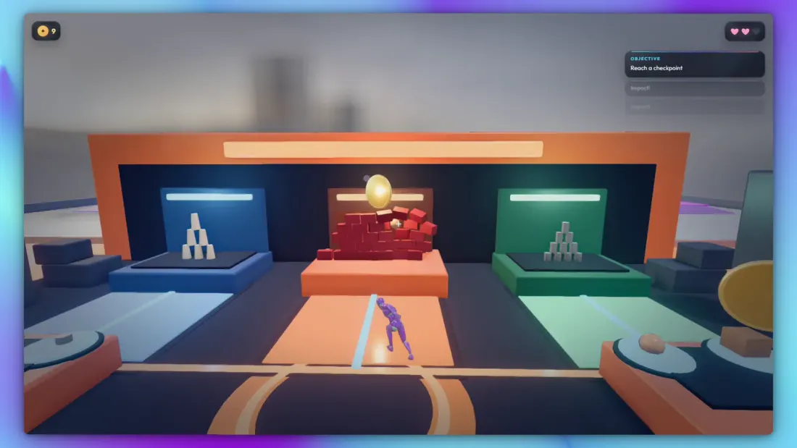

01 / 03
The network listened for one tone.
Long-distance trunks in the old analogue phone network used a 2600 Hz tone to mean “idle”. Play it down a connected line and the far switch assumed the call had ended, then waited for new routing digits.
Line idle
Pranshul Chandhokaka 2600th
I lead product and technology for Interior Company at Square Yards. Fourteen years across games, XR, design software and AI, and I still ship code on the side.
Locked
Drag off 2600 Hz to break the signal. Turn sound on to hear it.
01 Why 2600th
01 / 03
Long-distance trunks in the old analogue phone network used a 2600 Hz tone to mean “idle”. Play it down a connected line and the far switch assumed the call had ended, then waited for new routing digits.
02 / 03
A plastic whistle from a cereal box happened to hit 2600 Hz. Blown into a handset, it could seize a long-distance line. The network had no idea who was speaking its language.
03 / 03
Phreakers built boxes that played the network’s own routing tones, two frequencies at a time. Understand the signalling and you could route a call anywhere. Carriers eventually moved signalling out of band, and the trick stopped working.
Learn how a system actually works, then make it do something new. Today the systems are rendering engines, design tools and AI models, and the job is turning them into products people can operate.
14+
Years building Games, XR, design software and AI
2015
Co-founded GreyKernel Six years leading its technology
395331
Indian patent Co-inventor, humanoid robot control
Sep 2026
Still shipping Latest: DLSS 5 Video Player
02 Selected work
Six systems I led or built, across design software, applied AI and immersive training. Tune a line to preview it.
03 Call log
How I got here, from shipping mobile games to leading product and technology. Each era sounded different. The longer version
2012–14
Square wave
Game programmer on mobile games, then cross-platform Unity at Merkur. I learned to care about how software feels on the device someone actually owns.
2015–21
Sine wave
Co-founded GreyKernel and led its technology for six years: immersive learning, enterprise training, games, and a patented humanoid robot control system.
2021–23
Sawtooth
Principal software architect on SpaceCraft Pro. Real-time 3D stopped being a demo and became part of pricing, CAD and manufacturing.
2024–now
Signal from noise
VP Product & Technology, Interior Company. Deciding where generation helps and where a product has to be exact.
04 Side channels
Open source, public and runnable. This is where I learn a technology by shipping something with it.
v0.26.2 · 26 Sep 2026 · Windows · RTX
A free, open-source player that puts any video through NVIDIA’s DLSS 5 neural renderer and checks every frame against the original. It renders while you watch, then gives you split, wipe, difference and loupe views of what the model changed.
Its own documentation includes a frame where the model makes the picture worse.
Community project, not an NVIDIA product. The neural runtime is an unsigned community build; the README explains how to verify each file or supply the runtime yourself.

Active Kinema A third-person game and its level editor in one browser tab, written in TypeScript with Rapier physics. Source ↗05 Writing
Field notes, technical teardowns and essays, written while the work is still fresh.